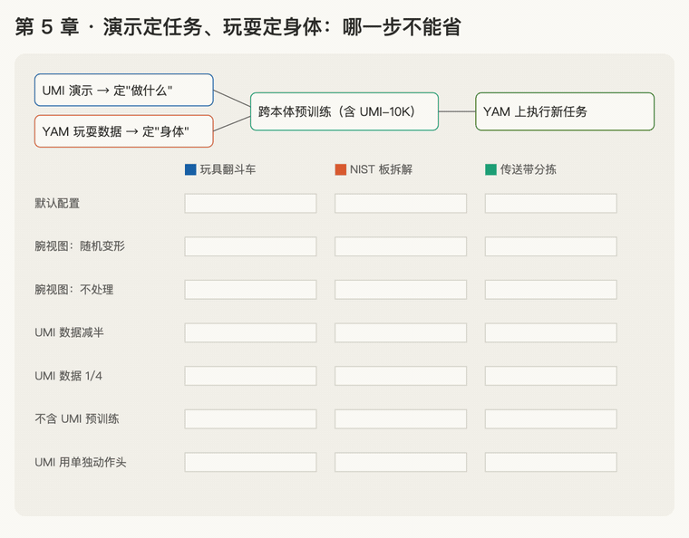

第 5 章 · X-Adapt：不遥操作，也能教机器人新任务
本章回答：一个任务只在人手、手持夹爪或外骨骼上演示过，从没在目标机器人上遥操作过，GR00T 2 怎么学会在机器人上做？哪些差距靠预处理消掉，哪些靠模型自己补？
讲解日期：2026-11-15 · 上一章：第 4 章 数据配方 · 下一章：第 6 章 RL 后训练
对应原文：materials/text/gr00t2-whitepaper.txt§1 L143–L154；§3.2 L484–L528；§4.4 L1098–L1277；附录 B.1 L2648、E.3 Tab. 17 L4855–L4880；Tab. 4 L3054–L3069
本章缩写：UMI = Universal Manipulation Interface（通用 / 操作 / 接口）；DexUMI = Dexterous UMI（灵巧 / UMI，外骨骼）；IK = Inverse Kinematics（逆 / 运动学）；DoF = Degrees of Freedom（自由度）；RL = Reinforcement Learning（强化 / 学习）；NIST = National Institute of Standards and Technology（美国国家 / 标准 / 与技术 / 研究院，这里指它的装配测试板）。全部缩写见 附录 · 缩写与术语表
讲解
第一步：一个配方——演示定任务，玩耍数据定身体（2026-11-15）
类比：看视频学菜 + 熟悉自家厨房。 一道新菜你只在别人厨房的视频里见过（演示定义"做什么"）；你自己的厨房你很熟，虽然从没在里面做过这道菜（目标机器人的"无任务玩耍数据"定义"用什么身体"）；你学过很多厨房、很多菜（跨本体预训练）把两者接上。
白皮书原话："Demonstrations recorded without the robot specify the task, task-agnostic play data from the target robot specify the embodiment, and cross-embodiment pretraining connects the two."（L496–L497）
公式（用第 1 章的拆法读）。
第一项需要"这个任务的画面"，第二项需要"这个机器人的动作"——两者可以来自不同的数据。
例子：Fig. 14 的真实现象（L1184–L1188）。同一个 YAM 顶视相机起始帧，预测"玩具翻斗车组装"的未来 8 步：
| 训练数据 | 想象出的画面里 |
|---|---|
| 只有 UMI 演示 | 人的手臂 + 蓝色 UMI 夹爪 |
| UMI 演示 + YAM 无任务数据 | YAM 自己的机械臂 |
没有跨本体预训练会怎样（Tab. 4 / Tab. 17，UMI → YAM，10 次试验）：
| 翻斗车 SR | NIST 板 SR | 传送带分拣（50 件里分对的比例） | |
|---|---|---|---|
| GR00T 2（预训练含 UMI-10K） | 60 | 50 | 86 |
| GR00T 2 不含 UMI 预训练 | 20 | 0 | 34 |
| π0.5 / LingBot-VA / GR00T 1.7 | 0 / 0 / 0 | 0 / 0 / 0 | 0 / 0 / 28 |
一句话：任务从"没有机器人的演示"里学，身体从"没有任务的机器人数据"里学，靠跨本体预训练和联合想象接起来。
第二步：四条路线，各消掉什么差距（2026-11-15）
类比：把外地菜谱改成本地菜谱。 能统一的先统一（换算单位、调到本地灶台的火候），剩下的"手感"让学徒自己补。
白皮书的分法：采集和转换先消掉能消掉的——相机几何、运动学、动作语义；剩下的交给 GR00T 2（L1103–L1123）。
| 路线 | 采集设备 | 预处理消掉的差距 | 还需要目标机器人玩耍数据吗 | 结果 | 原文 |
|---|---|---|---|---|---|
| 人 → Dexter（7-DoF 臂 + 22-DoF Sharpa 手） | 头 + 腕 GMSL 相机放在机器人对应位姿；PICO 腕部 6-DoF 追踪；Manus 手套 | 闭式 IK 离线重定向到臂和手，指尖对指尖保持捏合几何；视频不改 | 是，1:1 采样一池共用玩耍数据 | 滤纸 65%、显微镜载玻片涂抹 60%、传送带抛包裹 65%（基线为 0）；有一个任务零遥操作就胜过收了 10 条遥操作、但没有跨本体预训练的基线 | L1127–L1136 |
| UMI → YAM | GEAR UMI 手持夹爪（腕相机 + 宽度编码器） | 鱼眼腕视图重渲染成 YAM 腕相机视角；动作改写到 YAM 动作空间，用 YAM 的动作头 | 是 | 翻斗车 60%、NIST 板 50%、传送带 86%；10–20 条就能端到端成功 | L1198–L1210 |
| DexUMI → XHAND | 外骨骼一比一复刻 XHAND 16 个关节、接触面、腕相机、触觉格式 | 外骨骼绿色部件按颜色分割、外观随机化；指尖力投影成关节力矩加进动作 | 否（外骨骼就是这只手） | 香蕉酸奶、燕麦、划火柴 60–80%，基线全 0 | L1212–L1261 |
| 人类视频 → 仿真 → 真机 | 单段人类视频 | Video to Data 重建物体和手物运动 → CHORD 在仿真训状态型 RL 专家 → 扰动 + 视觉随机化渲染 1.5k 条 | 否（全是仿真数据） | 敲钉子 9/10 | L1268–L1277 |
UMI → YAM 的三条发现（L1204–L1210）：① 和 YAM 无任务数据联合训练，外观和场景差距就补上了；② 模型吸收外观、不吸收几何——所以腕视图必须按 YAM 相机重渲染，但视场和朝向大致对齐即可；③ 手持动作要改写进 YAM 的动作空间、由 YAM 的动作头解码。
例子：消融看哪一步最要紧（Tab. 17，翻斗车 SR / NIST SR / 传送带 SR）：
| 改动（其余保持默认） | 翻斗车 | NIST | 传送带 |
|---|---|---|---|
| 默认（共享动作头、按 YAM 重渲染腕视图、全部 UMI 数据、含 UMI 预训练） | 60 | 50 | 86 |
| 腕视图随机变形 | 0 | 0 | 60 |
| 腕视图不处理 | 0 | 0 | 46 |
| UMI 数据减半 | 30 | 0 | 84 |
| UMI 数据 1/4 | 10 | 0 | 70 |
| 不含 UMI 预训练 | 20 | 0 | 34 |
| UMI 用单独动作头 | 10 | 60 | 64 |
腕视图几何不对齐，两个长程任务直接归零——印证了"吸收外观、不吸收几何"。
一句话：几何（相机位姿）和动作语义必须手工对齐，外观差距交给联合训练；对齐做不好，再多数据也没用。
第三步：力从哪里来——DexUMI 的柔顺动作（2026-11-15）
类比：不仅记下"手指放哪"，还记下"按多重"。 切香蕉、划火柴光有位置不够，要知道用多大力；而且位置有误差时，手要"软"一点才不会把东西捏碎或滑脱。
做法（L1255–L1259，沿用 Adaptive Compliance Policy）：把外骨骼记录的指尖力 \(f\) 经雅可比转置投影成关节力矩 \(\tau\)，加进动作向量；执行时，预测的 \(\tau\) 用来降低该关节刚度并偏移位置目标，让手施加预测的力、对位置误差更鲁棒。
| 符号 | 读法 | 意思 |
|---|---|---|
| \(f\) | "f" | 指尖力（f = force） |
| \(J^\top\) | "J 转置" | 手指运动学雅可比的转置，把末端力映射成关节力矩 |
| \(\tau\) | "tau" | 关节力矩 |
| \(k'\) | "k 撇" | 降低后的关节刚度（k = stiffness 常数） |
\(q_{\text{target}}'=q_{\text{target}}+\tau/k'\) 是按"弹簧模型下施加力矩 \(\tau\) 需要的位置偏移"写的示意，白皮书正文只描述了"降刚度 + 偏移目标"，没给公式（细节在附录 B.3）。
例子（编的单关节数）。 想让一个手指关节压出 \(\tau=0.2\) N·m，刚度从 10 降到 \(k'=4\) N·m/rad：位置目标往物体里偏 \(0.2/4=0.05\) rad（约 2.9°）。物体真实位置偏了 0.02 rad 时，实际力矩只差 \(4\times0.02=0.08\) N·m；若刚度还是 10，会差 0.2 N·m——软一点更不怕位置误差。
一句话：DexUMI 把力也当动作学，执行时用"软"关节施力，对位置误差更宽容；这是 GR00T 2 目前唯一处理力的地方（力只作输出，不作输入，见第 11 章）。
动画演示：演示定任务、玩耍定身体：哪一步不能省

可交互版：animations/05-x-adapt-ablation.html（▶ 播放、→ 单步、↺ 从头开始；无参数，可单步）
怎么看： 1. 顶部是配方：UMI 演示定"做什么"、YAM 玩耍数据定"身体"、跨本体预训练接起来（第一步）。 2. 下面逐行亮 Tab. 17 的消融：腕视图几何不对齐时两个长程任务归零（第二步"吸收外观、不吸收几何"）。
练习与作答记录
题 1（第一步 配方）：按配方，要在 Dexter 上教一个只有人类演示的新任务，需要准备哪两类数据？哪一类可以所有新任务共用？
作答：（待作答）
题 2（第二步 消融）：Tab. 17 里"UMI 用单独动作头"在 NIST 板上反而更好（60 vs 50）。结合"共享头让 UMI 动作被 YAM 的解码器先验约束"这一点，猜一猜为什么？
作答：（待作答）
题 3（第三步 柔顺）：在第三步的例子里，如果刚度降到 \(k'=2\)，为压出 0.2 N·m 位置目标要偏多少？位置误差 0.02 rad 时力矩误差多大？
作答：（待作答）
口诀
演示定做啥，玩耍定身体，预训练来牵线；
几何必须手对齐，外观交给模型补；
力当动作软关节，捏得稳也不怕偏。
本章复习卡片
G11、G12（练习做完后，按答错、卡住的地方再补。）
附录 · 延伸阅读
推荐阅读
| 读什么 | 读哪里 | 读它为了什么 |
|---|---|---|
| ★ GR00T 2 白皮书 | §4.4 L1098–L1277 | 四条路线的原文 |
| ★ GR00T 2 白皮书 | 附录 E.3 L4675 起（Tab. 15–17） | UMI → YAM 的差距与消融 |
| GR00T 2 白皮书 | 附录 B.1 L2648 起 | 人 → Dexter 的采集、重定向、联合训练细节 |
| GR00T 2 白皮书 | 附录 B.3、E.4–E.6 | DexUMI 硬件与柔顺配方 |
| UMI（Chi et al., 2024）、DexUMI（Xu et al., 2025）、Adaptive Compliance Policy（Hou et al., 2025） | 全文（待下载） | 设备与柔顺控制原论文 |
数学原理
- 逆运动学重定向：给定末端（指尖）目标，解关节角；闭式解每秒可解约 11.8 万次双手（L1132–L1133）。
- 雅可比转置：\(\tau=J^\top f\) 是虚功原理的结果。
- 阻抗 / 柔顺控制：关节像弹簧，\(\tau=k(q_{\text{target}}-q)\)，刚度越低越"软"。
公式清单
| 公式 | 意思 |
|---|---|
| \(p(o',a\mid c)=p(o'\mid c)\,p(a\mid o',c)\) | 第一项从演示学任务，第二项从玩耍数据学身体 |
| \(\tau=J^\top f\) | 指尖力 → 关节力矩 |
| \(\tau=k(q_{\text{target}}-q)\) | 关节弹簧模型 |
代码对照
本章暂无代码对照：G2-M1/M2（玩具 WAM、无标签视频消融）完成后补 ch05_x_adapt.py。